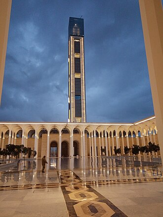

소개
Djamaâ El-Djazaïr ou la « grande mosquée d'Alger », est une grande mosquée située à Alger, en Algérie. La mosquée est achevée en avril 2019. Elle est, selon des sources, la plus grande mosquée d'Afrique et la troisième plus grande mosquée du monde après celles de La Mecque et de Médine, et selon d'autres sources, la deuxième d'Afrique derrière le Centre culturel islamique d'Égypte et ainsi la quatrième au monde.
جَامعُ الجزائر هو مركزٌ دينيّ، عِلمي، ثقافي وسياحِي، يقع في الجزائر العاصمة، بـالجزائر، تم الانتهاء من بنائه في أبريل 2019. ويعد أكبر مسجد في أفريقيا، وثالث أكبر مسجد في العالم بعد الحرَمين الشريفَين بمكة المُكرّمَة والمدينَةِ المنوّرَة.
The Djamaa el Djazaïr, also known as the Great Mosque of Algiers, is a large mosque located in Mohammadia, in the Dar El Beïda District of Algiers, Algeria. Opened in April 2019, it houses the world's tallest minaret that is 265 metres (869 ft) high, and is the third-largest mosque in the world after the Great Mosque of Mecca and Al-Masjid an-Nabawi of Medina in Saudi Arabia.
Cumaa el-Cezair, Cezayir'in başkenti Cezayir'de bir camidir. Dünyanın en yüksek minaresine sahiptir ve Suudi Arabistan'daki Mescid-i Haram ve Mescid-i Nebevi'den sonra dünyanın üçüncü büyük camisidir.
Djamaa el Djazair, juga dikenal sebagai Masjid Agung Aljazair atau Masjid Agung Aljir, adalah masjid di Aljir, Aljazair. Masjid tersebut merupakan yang terbesar di Afrika, menggantikan Masjid Hassan II di Maroko, serta masjid terbesar ketiga di dunia setelah Masjid Agung Mekah dan Masjid Nabawi Madinah di Arab Saudi berdasarkan luas kompleks. Menara masjid tersebut juga merupakan tertinggi di dunia serta menjadi bangunan tertinggi di Afrika.
جامع الجزائر جسے عظیم مسجد کے نام سے بھی جانا جاتا ہے الجزائر شہر ، الجزائر میں ایک مسجد ہے۔ یہ دنیا کی سب سے بلند مینار والی اورسعودی عرب میں واقع مکہ کی مسجد الحرام اور مسجد نبوی مدینہ منورہ کے بعد دنیا میں تیسری سب سے بڑی مسجد ہے۔
Die Große Moschee von Algier ist eine im Jahr 2019 fertiggestellte Moschee in der algerischen Hauptstadt Algier. Die Moschee gehört zu den größten der Welt und übertrifft die Hassan-II.-Moschee im Nachbarland Marokko deutlich. Ihr 265 m hohes Minarett ist das höchste der Welt. Die Fertigstellung war zunächst für das Jahr 2015 geplant. Am 25. Februar 2024 wurde sie von Staatspräsident Abdelmadjid Tebboune offiziell eröffnet.
La Gran Mezquita de Argel, también conocida como Djamaa el Djazaïr, es una mezquita en Argel, Argelia. Alberga el minarete más alto del mundo y es la tercera mezquita más grande del mundo después de la Gran Mezquita de La Meca y Mezquita del Profeta de Medina en Arabia Saudita.
Djamaa el Djazair è la denominazione ufficiale della grande moschea che si trova nel comune di Mohammadia, nella periferia della capitale Algeri.
자마 엘자자이르(아랍어: جامع الجزائر) 또는 알제 대모스크(프랑스어: Grande mosquée d'Alger)는 알제리의 수도인 알제에 위치한 모스크이다. 세계에서 가장 긴 37층 높이의 미나레트로 유명한 모스크로서 세계에서 3번째로 규모가 큰 모스크이기도 하다.
जामे अल जज़ायर: जिसे अल्जीयर्स की महान मस्जिद के नाम से भी जाना जाता है। अल्जीयर्स, अल्जीरिया में स्थित एक बड़ी मस्जिद है। अप्रैल 2019 में खोली गई, इसमें दुनिया की सबसे ऊंची मीनार है और यह मक्का की महान मस्जिद अल-हरम और सऊदी अरब में मदीना की मस्जिद ए नबवी के बाद दुनिया की तीसरी सबसे बड़ी मस्जिद है।
Джамаа эль-Джазаир — мечеть в Алжире. Строительство началось в 2012 году после объявления правительством Алжира конкурса стоимостью 1 миллиард евро, который выиграла крупнейшая китайская строительная корпорация China State Construction Engineering. Закончено строительство в апреле 2019 года.
지도에서
자료와 링크
- Wikipédia — Français
- Wikipédia — العربية
- Wikipédia — English
- Wikipédia — Türkçe
- Wikipédia — Bahasa Indonesia
- Wikipédia — اردو
- Wikipédia — Deutsch
- Wikipédia — Español
- Wikipédia — Italiano
- Wikipédia — 中文
- Wikipédia — 한국어
- Wikipédia — हिन्दी
- Wikipédia — Русский
- Wikidata — Q23012984
데이터: 위키데이터(CC0), 3개월마다 갱신. 연도는 그 건물에 대해 알려진 가장 이른 건립 연대입니다. 나중에 모스크가 된 건물(아야 소피아 등)의 경우 원래 건물의 연대입니다. 사진: 위키미디어 공용, 작가와 라이선스는 각 사진의 페이지에 있습니다.